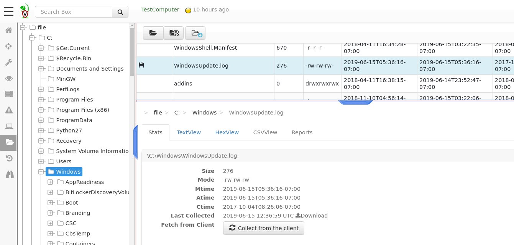
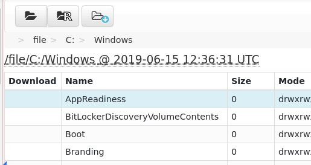
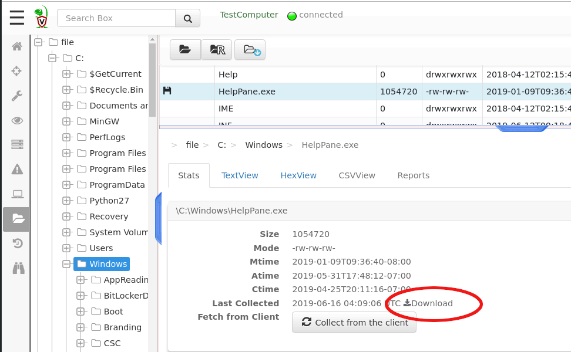
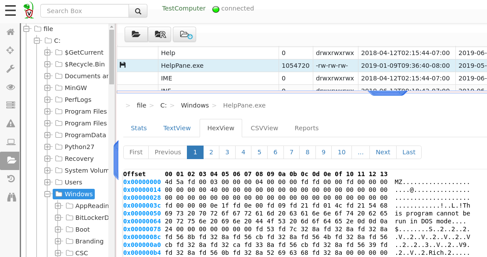

If we had to investigate a machine interactively we would probably start off by using Windows Explorer or a similar tool to navigate the endpoint’s filesystem directly. It is convenient and intuitive!
Velociraptor provides a similar feature - the client’s Virtual File System. This feature mirrors some of the endpoint’s files and directories on the endpoint on the server and allows user to navigate through those interactively.
After searching for a client, and selecting it you will see the option
Virtual Filesystem available in the side navigation bar.

The interface is divided into three main parts:
Virtual File System and its directories.Selecting a directory in the tree view will populate the file listing pane with cached information stored on the server’s. You can see the time when that listing was actually taken from the endpoint at the top of the table.

Since we can only show the information we have cached on the server, we may not have data for a directory on the end point we have never navigated to previously.
To refresh the server’s cache you can click the “Refresh this directory” button. This will schedule a directory listing on the client and refresh the server’s cache.
It is also possible to refresh directories recursively by clicking the “Recursively Refresh directory” button.
Sometimes we can see a file in the file listing pane and want to view it. Since the GUI only shows information cached on the server, the file contents are not immediately available to us.
Clicking on the “Collect From Client” button will schedule a file collection from the endpoint (if the client is currently connected the file will be download immediately).

You may now download the file to your computer by clicking the download button. Alternately you can view a hexdump or text dump of the file using the relevant tabs.

Many VQL plugins operate on files. However how we read files on the
endpoint can vary - depending on what we actually mean by file. For
example, Velociraptor is able to read files parsed from the NTFS
parser, compressed files within Zip archives, or even files downloaded
from a URL. VQL specifies the way a file is read via an accessor
(essentially a file access driver).
The Virtual File System make a number of common accessors available
for navigation, by specifying them at the top level of the tree view:
The file accessor uses the normal OS filesystem APIs to access
files and directories.
The ntfs accessor uses Velociraptor’s built in NTFS parser to
extract directory information and file contents.
The registry accessor uses the OS APIs to view the registry as a
filesystem. You can use this to navigate the endpoint’s registry
hives interactively.
While it is intuitive to interactively examine an endpoint using the
Virtual File System we typically need something a bit more
automated.
Velociraptor uses Artifacts to encapsulate and automate endpoint
analysis. You can read more about Client Artifacts.